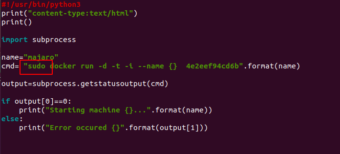

Docker over cgi
It's due to two things this problem arises:
When we see the error we find that the problem is permission denied its due to Security Enhanced Linux(SELinux)
SELinux : Security-Enhanced Linux (SELinux) is a Linux kernel security module that provides a mechanism for supporting access control security policies, including mandatory access controls (MAC). SELinux is a set of kernel modifications and user-space tools that have been added to various Linux distributions.
Use command #getenforce
To check if it's enabled or disabled. Make sure it's disabled.
Command to enable : #setenforce 1
Command to disable: #setenforce 0
In our case it's disabled.
So lets see the second reason due to which the error occuring and that is sudo priveledges. Since on the client behalf <> is requesting to run the docker over cgi therefore the permission is denied.
To check which user is working with cgi use command #ps aux | egrep '(apache|httpd)'
Now we need to add www-data in sudoers file. Use #nano /etc/sudoers
and add the user
Now in the python script use sudo in commands

And this time when we run it over cgi it worked